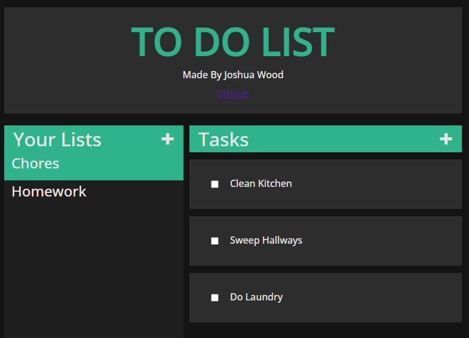

Skills

A web app in which the user can create and manage lists, each with their own creatable and manageable tasks.
This project was made with HTML, CSS and Javascript and was intended to introduce myself to the GitHub workflow. While the idea for it came from watching a tutorial, the tutorial was not followed step by step and instead served as a place to solve my own bugs (among many other places like StackOverflow and Reddit).
 View On GitHub
View On GitHub